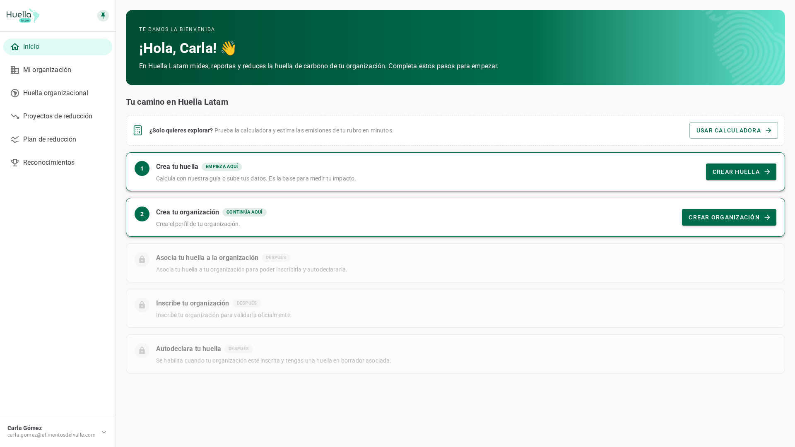
Entender qué muestra Inicio la primera vez que entras y qué te pide para empezar a medir.
Saber qué hace cada paso, cómo se desbloquea el siguiente y dónde retomar cuando vuelves.
Interpretar el total, el desglose por categoría, tu equivalencia, el ranking y el plan sugerido.
Es la primera pantalla al entrar. Mientras te falten pasos muestra un camino guiado; al completarlo se convierte en tu dashboard de emisiones.
En un paso disponible el botón no te lleva directo: destaca en el menú lateral la sección donde debes entrar y explica qué harás ahí. En los pasos ya hechos, en cambio, el botón abre esa sección de inmediato.
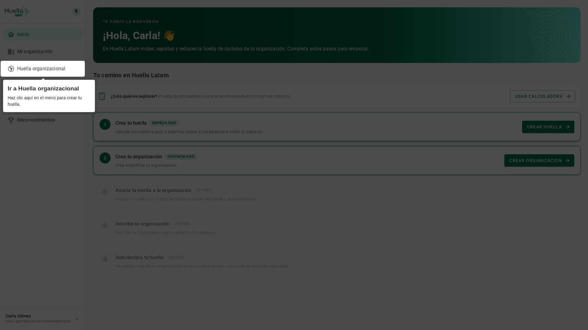
1 2 3Si todavía no quieres registrar tu organización, prueba la calculadora: el botón te lleva a Huella organizacional, donde eliges «Usar calculadora» al crear la huella. Estimas las emisiones de tu rubro en minutos y decides después si sigues el camino completo.
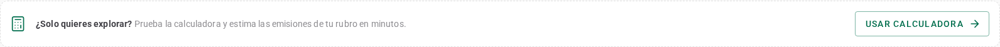
Todos los pasos se ven igual, así que aprender a leer uno te sirve para los cinco. Los pasos que ya puedes hacer se destacan con borde verde, y puede haber más de uno disponible al mismo tiempo.
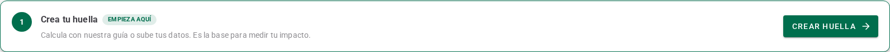
El paso 1 crea tu huella y el paso 2 el perfil de tu organización. Ninguno depende del otro: hazlos en el orden que prefieras.
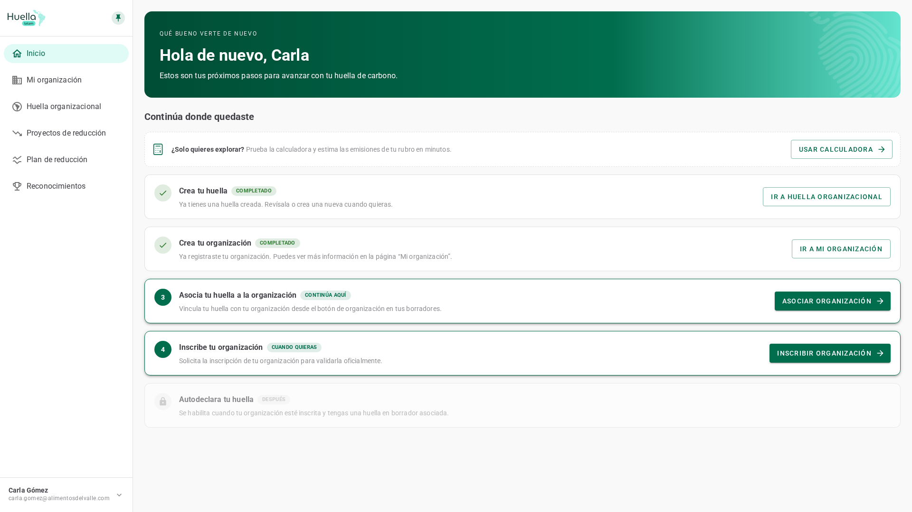
1 2 3 4 5 6Puedes asociar tu huella a la organización desde el momento de crearla; si la creaste sin asociarla, este paso lo resuelve. Asociarla es lo que te permite después autodeclararla.
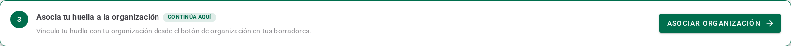
Inscribir tu organización es pedir su validación oficial. El paso se activa en cuanto existe tu organización; al enviar la inscripción cambia a En revisión y te ofrece ver el estado de tu postulación.
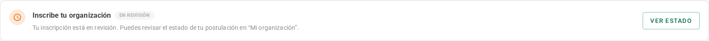
Autodeclarar es publicar tu huella. Con eso completas el camino y tu Inicio pasa a mostrar el dashboard de emisiones de tu organización.
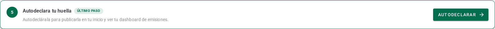
Cada paso se muestra en uno de cuatro estados. El ícono de la izquierda y la etiqueta te dicen, de un vistazo, qué te toca hacer.
| Estado | Ícono | Etiquetas | Qué significa |
|---|---|---|---|
| Activo | Número del paso | Empieza aquí · Continúa aquí · Cuando quieras · Último paso | Es una acción disponible. La tarjeta se destaca con borde verde e incluye el botón que te guía. |
| Completado | Visto | Completado · Inscrita | Ya lo hiciste. El botón cambia para que revises lo hecho cuando quieras. |
| En revisión | Reloj ámbar | En revisión (etiqueta gris) | Enviaste tu inscripción y está siendo revisada. Puedes consultar el estado de tu postulación. |
| Bloqueado | Candado | Después | Falta un requisito previo. La tarjeta se ve atenuada, sin botón, y la descripción te dice qué necesitas. |
Al autodeclarar, Inicio te felicita y ofrece pasar al dashboard: tú decides cuándo cerrar el camino, y esa decisión queda guardada en tu cuenta.
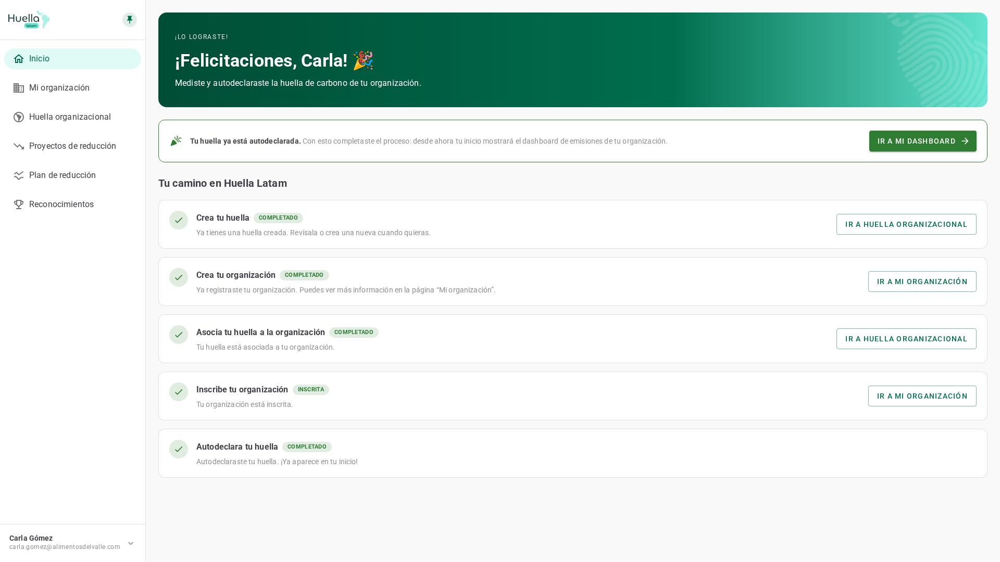
1 2 3 4Inicio pasa a mostrar las emisiones de la huella que elijas: el total y su desglose, tu equivalencia, tus reconocimientos, el ranking y el plan sugerido.
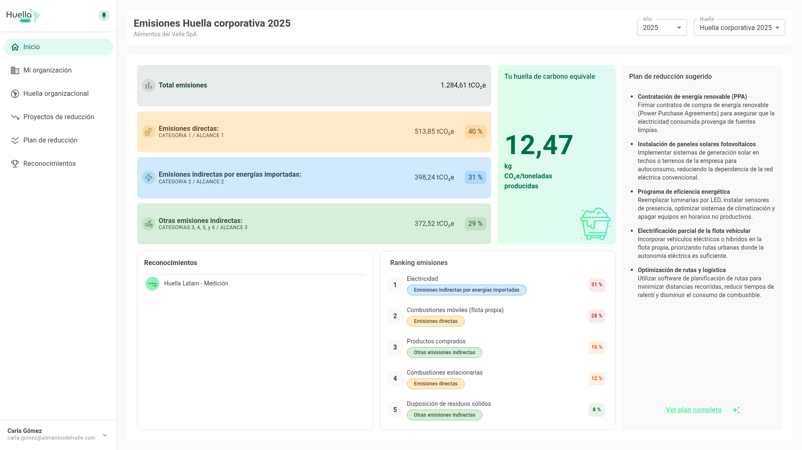
1 2 3 4 5 6La columna principal parte con el total de tu huella y sigue con una tarjeta por categoría, cada una con su color.
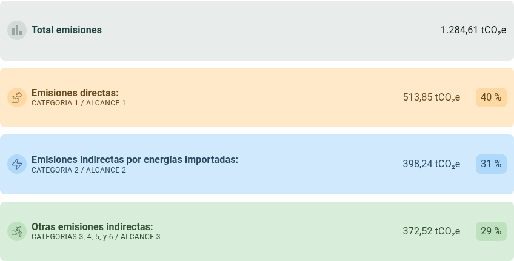
Dos tarjetas acompañan el desglose: tu equivalencia y tus sellos.
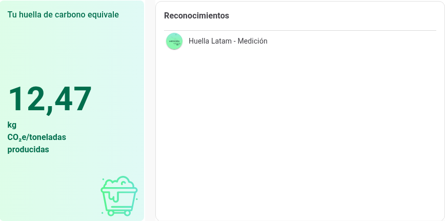
Las dos últimas tarjetas te dicen dónde actuar: el ranking ordena tus fuentes de mayor a menor y el plan, en la columna derecha del dashboard, propone iniciativas a partir de tus resultados. Si aún no registras actividades, ambas te indican qué falta.
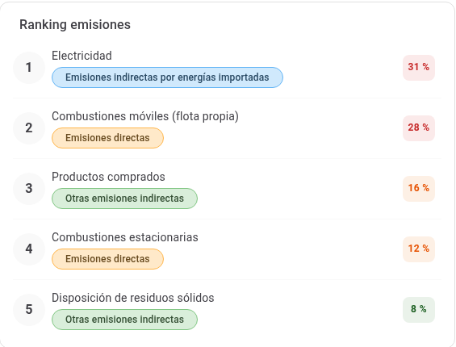